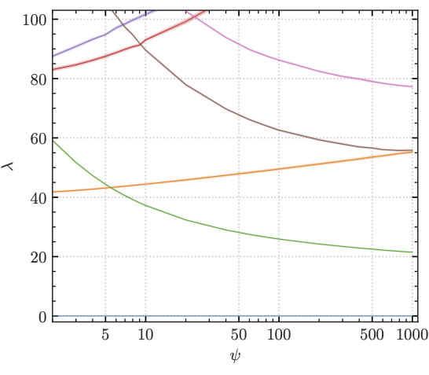

|
Moduli-dependent KK towers and the Swampland Distance Conjecture on the Quintic
|
|
 |
Take for example the Klein-Gordon equation \(g^{ab}\partial_a\partial_b \varphi = m^2\varphi\).
We see that the massive spectrum depends on the metric.
We can compute moduli-dependent Calabi-Yau metrics, and hence we can
compute (moduli-dependent) massive KK states on Calabi-Yau manifolds.
The swampland distance conjecture tells us that this KK tower should
become exponentially light when moving \(O(1)\) distance (in Planck units)
in moduli space (see top image). In this paper, we compute geodesics in moduli space to
see what it means to move \(O(1)\) in terms of the parameters that describe
the CY.
|

Tuesdays: Jointly with colleagues from the String Pheno community, I am organizing the weekly String Pheno seminar series.
Wednesdays: Jointly with scientists from academia (Madison, Munich, Northeastern) and industry (Deepmind, Google Brain, Microsoft), I am organizing the bi-weekly seminar series Physics meets ML.
I have written a Physics Report on Data science applications to string theory. It comes with a Github repo.